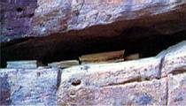
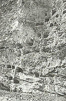
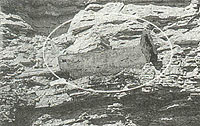
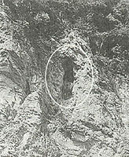

|
中国悬棺
最近，三峡库区湖北省姊归县考古队在姊归县西南部的磨坪乡发现一悬棺群。该悬棺群位于磨坪乡杨林桥村二组的升坪河岸边，分布在长20、高100米的峭壁上，木质棺材全部置于人工开凿的洞穴或山崖的石缝之中。洞穴直径约2.5、高1.5米。经初步统计共有悬棺131副。据有关部门介绍，该悬棺群是国内迄今为止发现的最大的悬棺群。
悬棺所在地都是山水相连的地带，山多是悬崖峭壁，水多是激流湍急的源头或陡坡下游，封上敛下，人迹罕至。千百年前，古人是如何将笨重的棺木和尸骨置放到悬崖高处的？一直是世人关注的焦点。
此次，姊归考古队员通过高倍望远镜观察悬棺群，竟发现悬棺群最高处的一个洞穴内有一捆绳索。如果进一步考证，证实这捆绳索与洞穴内的棺木同属一个时代，则将为揭开悬棺的神秘面纱提供有力的佐证。

龙虎山位于江西鹰潭市南郊，按照“北孔（孔子）南张（张天师）”的说法，曾是张天师修炼宝地的龙虎山就是我国道教的发祥地。龙虎山的区域内有99峰、24岩，蜿蜓流淌于群山之间的是水色清漪的仙水溪。
龙虎山仙水岩，有成片的千古崖墓群，绝壁之上，玉棺悬空 ，神秘莫测，被称为世界文化史上的一大奇观。墓葬距今2600余年，为春秋战 国时期古截越人所为。其数量之多，位轩之险，造型之奇特举世罕见。百米悬崖绝壁之上的洞穴中棺木是用 什么办法放置进去的？古越族人为何要将先人安放洞穴之中？什么人才能享受 此种殊荣？成为千古之谜，至今未能破解。
作为中国道教发祥地，龙虎山道教文化独树一帜，而龙虎山的崖墓（又称悬棺）更是中国一绝。龙虎山崖墓数以百计，全部镶嵌在悬崖峭壁之上，整个崖墓群如一幅巨大画卷联系在一起，更增添了其神话色彩。龙虎山崖墓群是中国最早的崖墓群，是中国崖墓的发源地。除最集中的仙水岩有上百座外，马祖岩、金龙峰及 周围地区均有零星崖墓。它们的位置几乎都在悬崖峭壁之上，高低不等，远远看去大小不一，随时洞穴的变化而变化，形成奇特的景观。
79年，在国家文物事业管理局的重视下，江西省博物馆考古队和贵溪县文物陈列室对仙水岩崖墓群进行了一次规模较大的联合发掘工作。在这次发掘中，共清理了18鹰岩墓，发掘了棺木37具，较完好的人骨架16副。出土了陶器、原始的瓷器、骨器、玉器、竹木器、纺织品、纺织具、乐器等220件。这些都是春秋战国时期的珍贵文物。
其中有一副仍完整无损的保存到今的干尸。毛发皮肉和连接骨骼的盘腱均已消失，一节节脱了节的骨头像大小珍珠似的躺在一起，形成了一个人的完整骨架，头颅、肋骨、手、足均十分分明。
贵溪崖墓出土的220件珍贵文物，有陶器、纺织工具、古琴、等。其中陶器就占了124件。这些陶器做工精细，不仅反映了当时手工工艺水平之高，而且根据其造型和陶纹就能准确地判断其所属年代。现陈列在贵溪文物馆中。
龙虎山崖墓群的“悬棺”棺森大都用世整大段楠木刳制而成，大小不一，形式迥异。有世大的可容葬十余人的“船棺”；有造型如古屋的“屋脊棺”；有贺筒独木的“独舟棺”；也有现今常见的“方棺”；还有微型的“二次葬”用的“骨灰盒”。从考古发掘的陪葬品来看，这些棺木里的主人均为古越族人，他们“习以水战，以舟代车，断发纹身”；居于山国水泽。
1989年6月13日，“中国悬棺研究”课题组利用仿古绞车等原始机械工具，在贵溪仙水岩重现了两千多年前古人吊装悬棺的过程，为人们揭开悬棺的“千古之谜”指引了一条很好的路子。
|